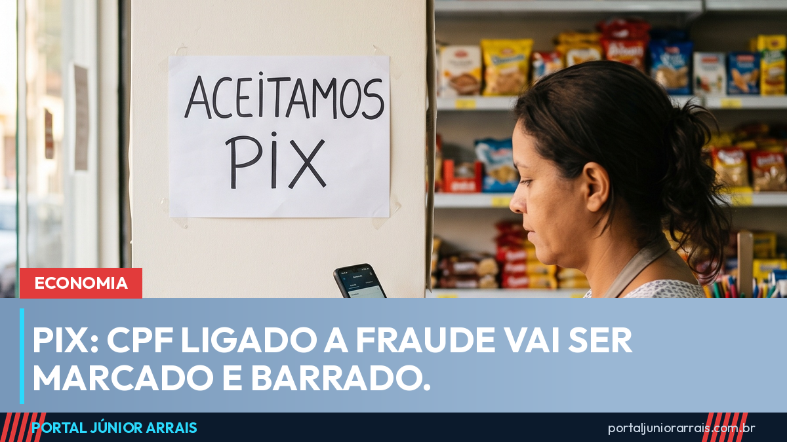

Pix vai marcar CPF suspeito de fraude e barrar transferência; veja o que muda e quando

O Banco Central anunciou nesta sexta-feira (18) um pacote de mudanças no Pix. A principal começa a valer de imediato: bancos e instituições de pagamento passam a poder marcar CPFs e CNPJs ligados a fraude e, a partir dessa marcação, as transferências daquela pessoa ou empresa passam a ser recusadas automaticamente. As regras estão na Resolução BCB nº 587.
Como funciona a marca de fraude
A instituição que identificar indício de fraude registra a marcação no DICT, o cadastro que guarda as chaves Pix. O marcador fica pelo prazo de cinco anos, contados do registro. Enquanto ele estiver ativo, as operações são rejeitadas tanto quando a pessoa marcada envia dinheiro quanto quando recebe — a exceção são as devoluções.
Quem for marcado por engano tem direito de contestar. O prazo é de sete dias depois da análise da instituição para pedir o cancelamento do registro. A partir de fevereiro de 2027, as instituições também passam a ser obrigadas a avisar o cliente de que ele foi marcado — hoje a marcação já vale, mas o aviso formal só entra depois.
Boleto e QR Code na mesma cobrança
A partir de 1º de fevereiro de 2027 chega a cobrança híbrida: a mesma fatura poderá trazer, lado a lado, o código de barras do boleto e o QR Code do Pix. O cliente escolhe por qual dos dois quer pagar, e a cobrança se encerra com qualquer um deles. É a mudança que mais deve aparecer no dia a dia de quem paga conta de luz, água, mensalidade e carnê.
Pix Automático na conta-salário
Em 1º de julho de 2027, o Pix Automático — aquele que autoriza um débito recorrente, como assinatura ou mensalidade — passa a funcionar também em conta-salário. Hoje a modalidade não alcança esse tipo de conta, que é justamente onde cai o salário de boa parte dos trabalhadores com carteira assinada.
Banco em liquidação sai na hora
O pacote também endureceu a regra para instituição que quebra. Quem entrar em liquidação extrajudicial passa a ser suspenso imediatamente do Pix, com prazo de 30 dias para pedir uma saída organizada do sistema. Não pedindo, o desligamento é automático. A medida existe para evitar que dinheiro continue entrando em uma instituição que já não tem condições de devolvê-lo.
Cuidado com golpe
A palavra "bloqueio" é um presente para o golpista, e essa notícia entrega justamente isso. Prepare-se para receber mensagem, ligação ou e-mail avisando que "o seu CPF foi marcado como suspeito no novo sistema do Pix" e oferecendo o desbloqueio mediante uma taxa, uma transferência de teste ou o envio de senha e código do aplicativo. Também vão circular links pedindo "recadastramento da chave Pix" para não perder o acesso. Marcação de fraude é feita pela instituição e comunicada pelos canais dela — não por link em mensagem, e nunca mediante pagamento.
Nenhum banco e nenhum órgão público pede senha, código de aplicativo ou transferência para desbloquear conta. Se aparecer uma cobrança que você não reconhece, ou se a sua conta travar de verdade, procure o atendimento oficial da sua instituição e, se o prejuízo já ocorreu, um profissional de sua confiança para avaliar o que dá para reaver.
Conteúdo informativo — não substitui orientação individualizada sobre o seu caso.
Júnior Arrais · Editor do Portal Júnior Arrais
Comunicador de Ubá (MG). Escreve todos os dias sobre benefícios sociais, INSS, trabalho e economia do dia a dia, a partir do Diário Oficial, de portarias e de fontes oficiais, em linguagem simples. Conheça a linha editorial e a política de correções do portal.